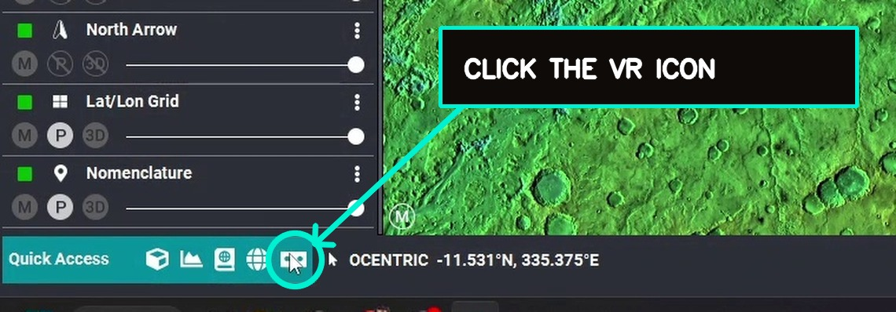

001
Prepare your data in JMARS
Open the planetary datasets and layers you want to explore, then view them in the JMARS 3D window.
JMARS WORKFLOW
Build a scene from your planetary datasets in JMARS, then open that same scene in Planetary Parfait for immersive exploration.
Open the planetary datasets and layers you want to explore, then view them in the JMARS 3D window.
In the 3D window, select the VR icon to prepare your current view for immersive use.

Save the terrain and your selected data layers as a scene.
Sign in to Planetary Parfait with your JMARS credentials. Your saved scene will be ready to open and explore.
Return to Planetary Parfait to learn more about the platform and collaboration opportunities.
RETURN TO PLANETARY PARFAIT →